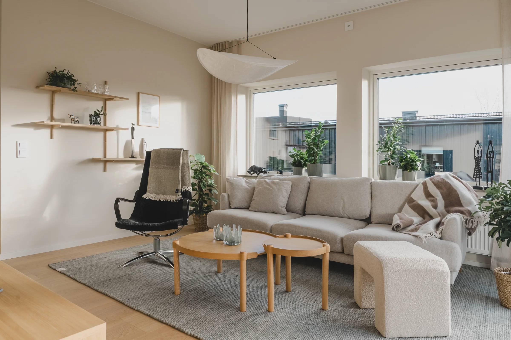
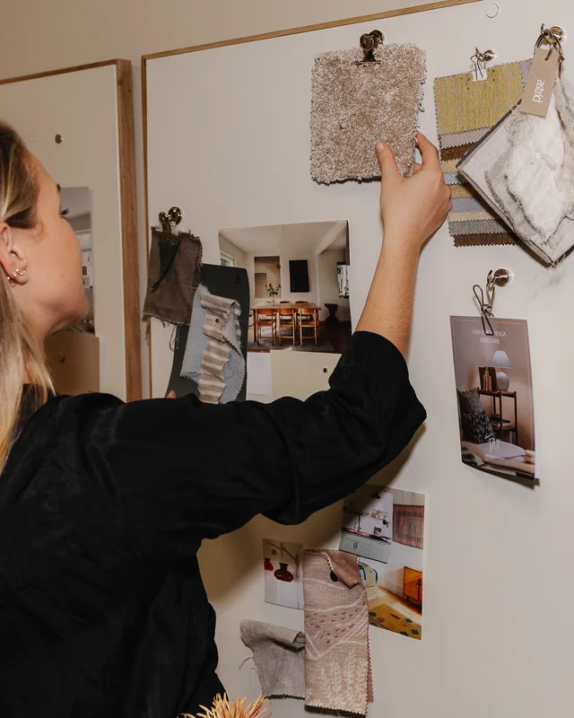
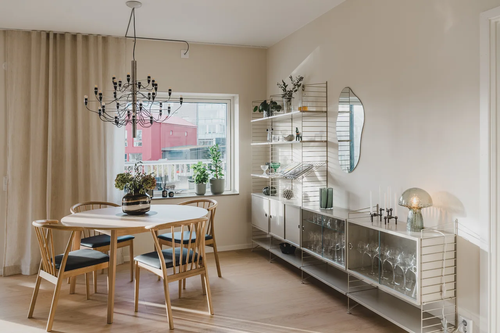
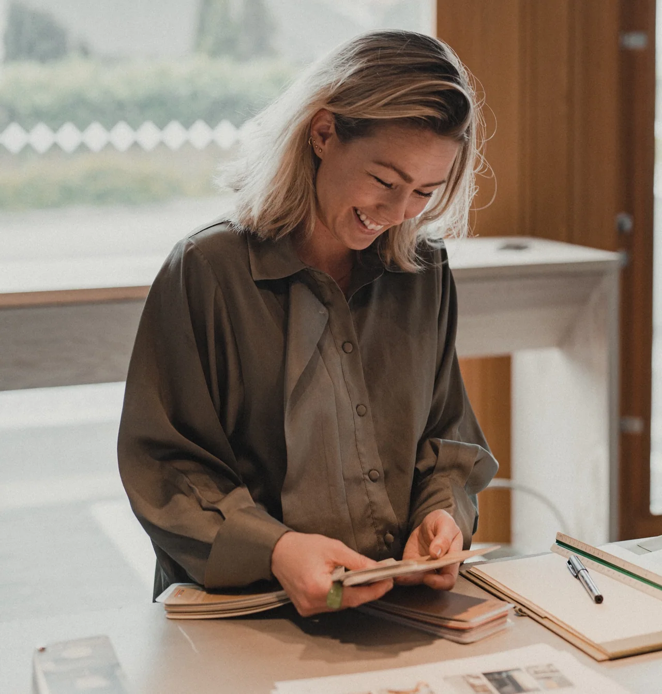

Låt rummet
kännas som du.
Personliga hem och miljöer med omsorg om det som känns, syns och håller. PUR Interiör & Koncept, Varberg.
Kliv in i våra projektDet ska inte bara
se rätt ut.
Det ska kännas rätt.
Din favoritfåtölj. Ljuset på morgonen. Materialet du gärna drar handen över. Det är tillsammans som detaljerna blir ett hem.
PUR skapar inredning där det du redan tycker om får möta omsorgsfullt valda tillägg. För privatpersoner och företag som söker en genomtänkt, personlig helhet.
Det här är PURRum med en egen berättelse.
Se alla projektFrån den första känslan
till en färdig helhet.
Fyra sätt att skapa något personligt. För ditt hem, din verksamhet eller ditt nästa bostadsprojekt.

Ett hus att längta hem till.
Vi inreder visningshus som känns som hem. Material, möbler och detaljer lyfter bostadens karaktär och hjälper besökaren att föreställa sig livet där.
Utforska visningshus
Många val.
En tydlig riktning.
Ett husbygge kommer med många beslut. Interiörkompassen hjälper dig att hitta en röd tråd i material, kulörer och stil — med ditt sätt att leva som utgångspunkt.
Utforska interiörkompassen
Rum för dem
som lever där.
Hem, kontor och gemensamma miljöer. Vi tar vara på rummets förutsättningar och formar en helhet som både känns personlig och fungerar i vardagen.
Utforska inredningsuppdragNär det rätta
inte finns färdigt.
Specialritade och platsbyggda möbler som tar vara på rummets möjligheter. Form och funktion får mötas i lösningar som hör hemma i helheten.
Utforska möbeldesignEn personlig blick
på ditt nästa rum.
Bakom PUR finns Martina Liljeroth. Med känsla för färg, material och möten mellan gammalt och nytt formar hon miljöer som speglar människorna som använder dem.
Martina Liljeroth, grundare
Det som redan finns är en viktig del av utgångspunkten. En omklädd stol eller en älskad möbel kan bli början på en helt ny helhet.
Lär känna Martina

Det är människorna
som gör ett rum.
”Interiörkompassen har höjt kundupplevelsen och gjort inredningsvalen till en smidig och inspirerande del av bostadsresan.”
Marknadschef, A-Hus
”Stort tack till Martina på Pur Interiör för all hjälp att förverkliga vårt drömhem.”
Privat inredningsuppdrag
Ska vi ge din
idé ett rum?
En ny bostad, en plats som behöver förändras eller en möbel som saknas. Berätta vad du tänker.
Prata med Martina